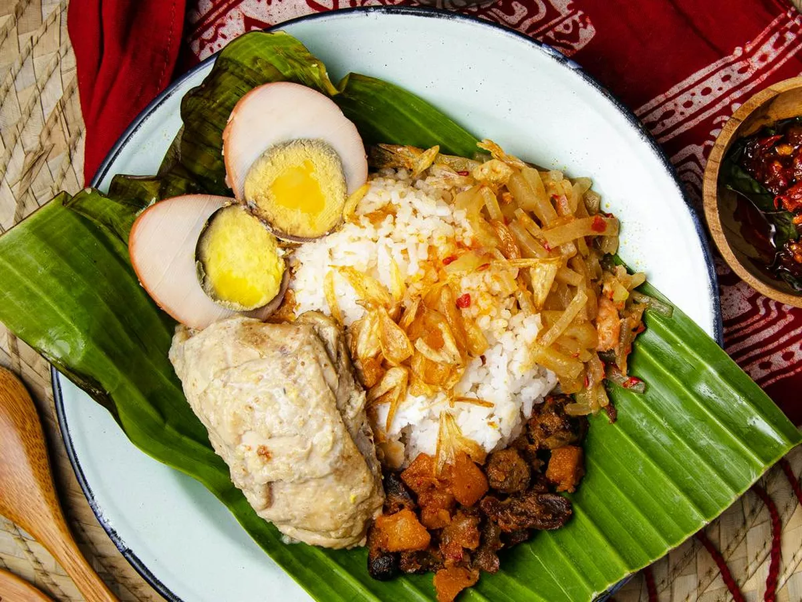
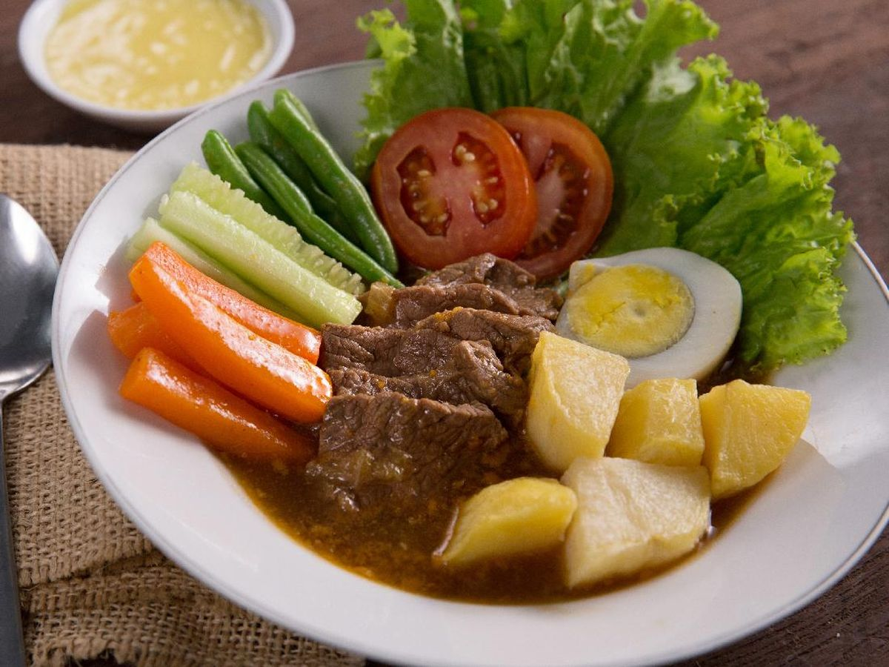

Serabi Solo
Serabi Solo adalah jajanan khas Solo yang berbentuk bulat seperti piring dengan sedikit kerak di sekelilingnya.
Serabi Solo memiliki tekstur yang kenyal namun lembut.
Serabi Solo memiliki rasa manis dan gurih sehingga tidak memerlukan kuah manis dalam penyajian

Nasi Liwet
Nasi Liwet adalah nasi putih dengan cita rasa gurih yang diolah menggunakan santan, garam, serai dan salam
Nasi Liwet biasanya dihidangkan bersama sayur jipang, telur pindang, olahan santan kental dan suwiran ayam opor

Selat Solo
Selat Solo merupakan perpaduan antara makanan Eropa dan Jawa sehingga sering disebut 'Bistik Jawa'.
Selat Solo adalah sajian olahan daging yang dilengkapi dengan berbagai macam sayuran.
Selat Solo sendiri memiliki cita rasa asam manis dan segar.